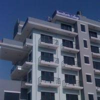
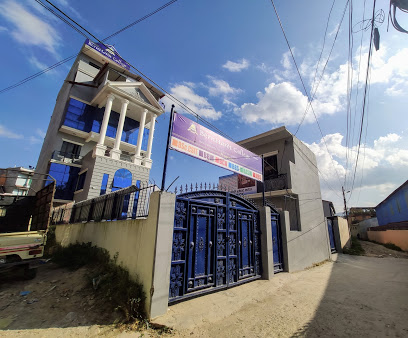
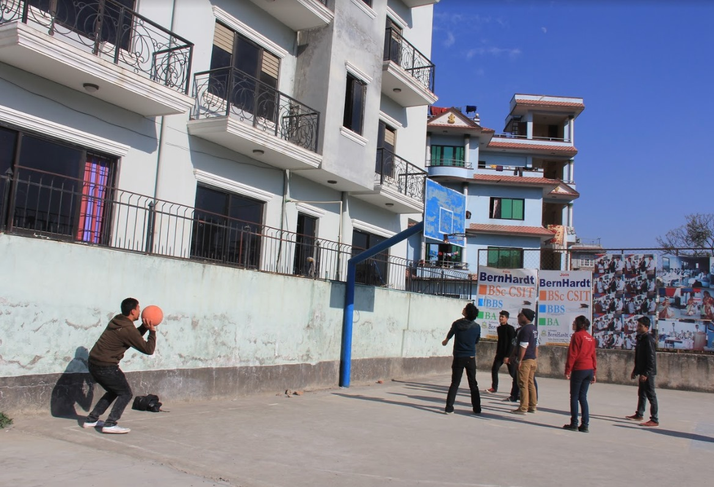

Kathmandu BernHardt College is a unique institution designed to disseminate quality education to students. The inspiration derived from this outstanding success in managing the school, quite naturally, has led us to conduct a college of our own, hence Kathmandu BernHardt College (KBC). The atmosphere of KBC positively enhances the learning process of students. It is situated in the quiet atmosphere at Bafal Ring Road within easy reach of major locations of Kathmandu - the capital city. Peaceful, safe, independent cafeteria, spacious sports field and friendly academic environments are the essence that makes BernHardt unique as ideal study center.
In 24th February 2020, UGC decided for the Accreditation and on 6th March 2020, Kathmandu BernHardt College was declared as the First Private QAA College in Nepal. The college was also awarded as the best private college of the year 2076.
Vision:
The vision of KBC has evolved over the years since its inception in 2003. The vision of KBC is to develop the center of excellence for Management, Social Sciences, Technical and Professional education and Research at par with national and international standard, advancing the nation’s interest to fulfill gaps of skilled professional as well as to compete successfully in the global arena.
This vision stands today as the underpinning and conceptual framework for the strategies and initiatives outlined in the plan that follows. It also reflects the values and aspirations of a broad cross section of the college.
Mission:
The Mission of KBC is to establish it as world class learning center that equip students with the skills, ability and knowledge to successfully compete in their chosen discipline.
| CO-ORDINATOR | FACULTIES | EMAIL-ID |
| abhimanu yadav | BSc.CSIT | abhimanyad33@gmail.com |
| ram babu mahatto | BCA | rambab353@gmail.com |
| ganesh thapa | BBS | driscoll63@gmail.com |
| babaji | BA/BASW | baba167@gmail.com |
| fulumaya | BBM | tulumaya67@gmail.com |